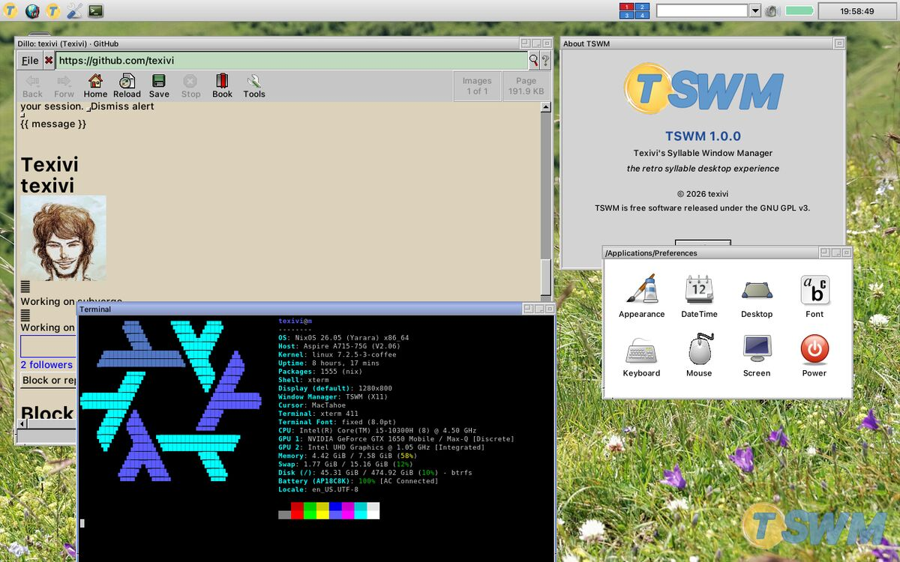
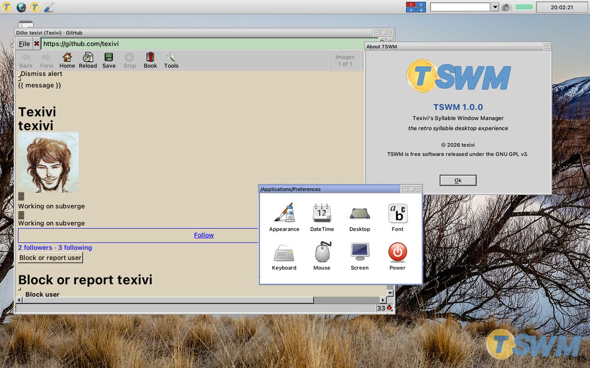

Projects / TSWM
TSWM
TSWM (Texivi's Syllable Window Manager) is an X11 window manager with a small desktop that copies the look of Syllable Desktop 0.6.6. TSWM is written in C with Xlib, cairo and gdk-pixbuf, and it is released under the GPL v3.


Build
make
./run-xephyr # nested test session
sudo make install PREFIX=/usr # also adds the TSWM session to your login manager
make install # or ~/.local, start it with startx ~/.local/bin/tswm-sessionYou need gcc, make, pkg-config and the development files for cairo, x11, xrandr, gdk-pixbuf, xcomposite, xdamage, xfixes, xcursor, fontconfig, xscrnsaver and pam.
What is in it
- The window frames, the dock, the menus and the widgets follow libsyllable and the Photon decorator. The icons and some of the wallpapers come from the Syllable sources.
- The apps are part of the repository and share one toolkit in
src/sylui.c. They are Files, AEdit, AView, Calculator, CharMap, Launch, Preferences and some monitors. - The dock menu lists every installed program that has a
.desktopfile, under its Syllable section. - Alt+Tab switches windows, Alt+F1 to F4 switch desktops, Ctrl+Alt+Backspace reloads the configuration, and Print takes a screenshot.
- The configuration is in
~/.config/tswm/theme.conf. An executable file~/.config/tswm/autostartruns at startup. - Setting
TSWM_NOCOMP=1turns the compositor off. - The wallpaper credits are in
data/wallpapers/CREDITS.txt.